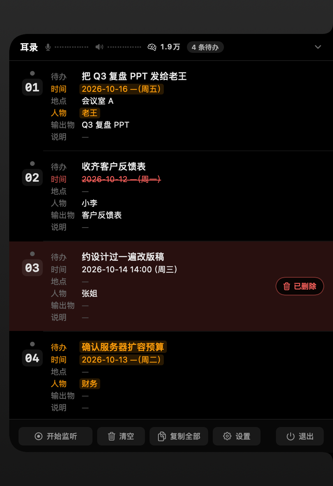
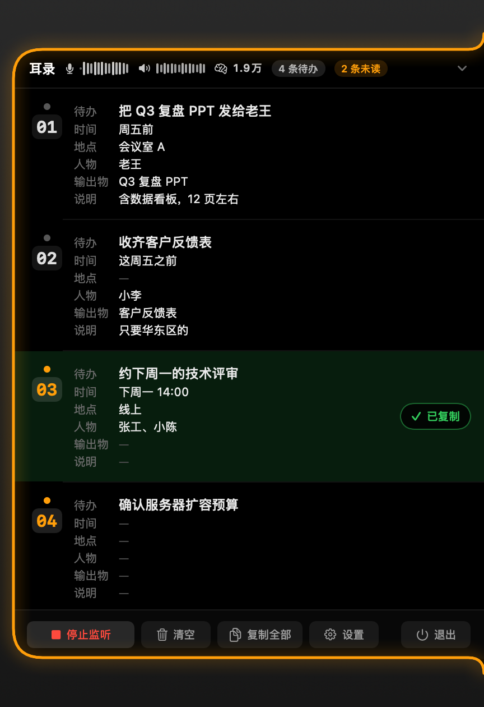
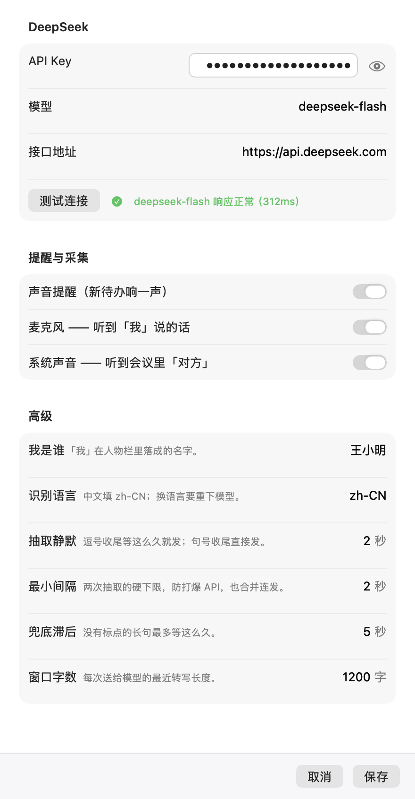

会开得挺顺，要你做的事却没留下
记笔记的人听得最差，不记的人散会就忘——要你做的那些事，总是在别的地方丢掉的。
记了一整页，回头还得再挑一遍
笔记记下来的是流水账：谁提了什么、聊到哪儿了，真正落到你头上的活混在里面，会后得再读一遍才挑得出来。
一边听一边记，两边都顾不上
忙着打字就跟不上讨论，抬起头又漏了刚说定的时间。记得越认真，听得越差。
散会那一刻，细节已经开始模糊
谁答应了、什么时候交、交给谁——当时都清楚，走出会议室就开始不确定，还得在群里再问一遍。
耳录换了个方式：它替你听——散会时，待办已经一条条排好了。
它不整理录音，它交给你一张待办清单
会后要花时间消化的东西，这里一条都没有：听到的每一句话，都当场落到该落的那一条上。
两路声音，各归各的
麦克风里是你说的，电脑里是会议对方说的，两边分开听、分开认人。你说「我」揽下的活、对方说的「你」，人物栏各落各的名字，不用猜是谁说的。
说完几秒就出现
一句话说完，几秒内待办就落在面板上，不是等散会再总结一轮。之后聊到的补充——时间、地点、要交什么——会自动补进同一条里，越聊越全。
一条待办，六个字段
待办、时间、地点、人物、输出物、说明——一次列清。口语里的「下周五之前」「下周三下午」直接落成时间，不用自己换算。
编号可以念出来
每条待办有个固定编号，屏幕上写着「待办 3」，你照着念「待办 3 的地点改成会议室 B」，它就知道你说的是哪条——手不用离开键盘，会也不用停。
每一次修改都看得见
新补上的内容亮一下橙色，被改掉的划上红色删除线，整条不要了就整块变红——它动了哪一条、动了哪儿，扫一眼就知道，不会悄悄改你的清单。
一枚把手，贴在屏幕右边
收着的时候只占屏幕右边一条边，圆点慢闪就是在听。想看内容点开，看完点收起；点任意一条就复制走——不占 Dock，也不弹主窗口。
不碍事，也不装死
它整场会都在你屏幕边上，所以你更该知道它什么时候在听、什么时候出了问题。
点击才展开
不是鼠标划过就弹出来——只有点它才开。把手旁边那圈留白点下去，点到的是下面的窗口，不是它。
两条小波形，谁在说一眼就知道
标题栏上一条是「我」、一条是对方，扫一眼就知道两边有没有声音，不用去读文字。
出错不静默
没填 Key、接口出错，面板上直接写明原因和该按哪个按钮，不会悄悄没反应。
用量看得见
标题栏上那个数字是这次打开以来累计花掉的分析用量，每成功整理一次就涨——花了多少，不用去别处查。
它长什么样，占多大地方
三张真机画面：改动看得见、点一条会发生什么、收起来时它待在哪儿。


一屋子人的声音，不该离开这间屋子
开会要录音、要上传、还要先让所有人同意——耳录把这件事整个绕开了。
听到的话，先留在这台 Mac 上
转文字在这台 Mac 上完成，声音不往外传，断网也能用，不用注册、不用登录。真正离开本机的只有一样：最近约 1200 字听到的文字，发给你自己填的 DeepSeek 接口，用来把大白话整理成一条条待办（字数可以调）。待办和文字都不写进硬盘，退出程序就清空。
花钱吗？只花你自己的用量
应用本体不收费（MIT 开源）。要自己准备的是一个 DeepSeek 的 Key：每次分析只花几百个 token，日常开会用很便宜。用多少花多少——没有订阅，也没有时长和次数限制。
三步，让它开始替你听
不用注册、不用登录——装上、填上 Key、点一下开始监听。
下载安装
在 Releases 下载 EarShot-*.dmg，打开后把 EarShot.app 拖进「应用程序」。要求 macOS 26 或更新。应用未经 Apple 公证，首次打开请右键点图标选「打开」。
填上你的 Key
面板底栏点「设置」，填入在 platform.deepseek.com 申请的 Key，点「测试连接」确认能用。每次分析只花几百个 token。
点「开始监听」，给一次权限
系统会要两个权限：屏幕录制是必须的（采电脑里的声音和麦克风都要用它，授权后要重启耳录才生效），麦克风可选，不给只是听不见你说的。然后说一句带待办的话——比如「下周五之前把季度复盘的 PPT 发给老王」。

打开时提示「无法验证开发者」或「已损坏」？
这个应用没有 Apple 开发者证书、没有做公证，所以首次打开会被 Gatekeeper 拦一下。放行一次即可：
- 先双击打开一次，macOS 会提示无法验证开发者；
- 打开「系统设置 → 隐私与安全性」，在底部找到被拦的提示，点「仍要打开」。
或者，在终端执行一次这条命令，之后就能正常打开：
xattr -dr com.apple.quarantine /Applications/EarShot.app
你可能想问
要花钱吗？
应用本体不收费，MIT 协议开源。要自己准备一个 DeepSeek 的 Key——每次分析只花几百个 token，日常开会用很便宜。
会上说的话会被上传吗？
声音不会。转文字在这台 Mac 上完成；离开本机的只有最近约 1200 字的文字，发给你自己填的 DeepSeek 接口用来整理待办，字数可以调。待办和文字都不写进硬盘，退出程序就清空。
跟云端会议助手有什么不一样？
不用上传录音、不用注册、不用买会员，没有时长和次数限制，也不用在开会前请一屋子人同意——声音根本没离开你的电脑。代价是整理待办要自备一个 DeepSeek 的 Key。
已经记下的待办还能改吗？
能。照着屏幕念编号就行：「待办 3 的地点改成会议室 B」——改动会落到同一条上，并亮一下橙色告诉你改了哪儿。
电脑外放的时候会不会听重？
不戴耳机时，喇叭放出来的声音会被麦克风再听一遍，于是对方的话会出现一份重复的；两份太像时，后到的那份会被丢掉。戴上耳机就从根上没有这个问题——所以推荐戴耳机开会。
支持英文或别的语言吗？
支持。设置里换「识别语言」就行，第一次用新语言会先准备一下对应的识别能力。
为什么要求 macOS 26 或更新？
用的是新一代的语音识别能力：认得更准、出字更快，代价是系统版本要求高。
待办关掉还在吗？
不在。待办和听到的文字只在内存里，退出程序就清空——这是故意的：会议内容不留在电脑里。想留一份，点一条复制走就行。